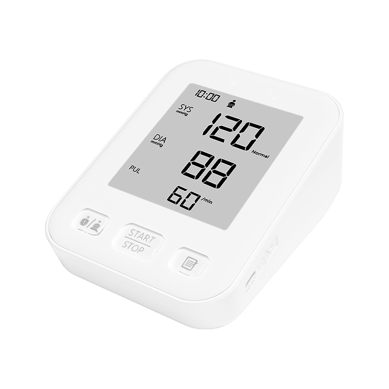

PRODUCT FAMILY / OEM & ODM
Upper Arm Blood Pressure Monitors
for OEM & ODM
Compare upper-arm models for your medical device brand or distribution portfolio. Select a display, review cuff options and discuss the configuration for your OEM/ODM project.
01 / UPPER-ARM
Find your model.
Choose YP7101 for LED, YP7201 for LCD or YP7202 for backlit LCD. Open a model to compare its cuff, power and memory specifications.


SELECTED MODEL
Back to BP models ↑| Specification | Details |
|---|
Documents & Downloads
Request files for your selected model, configuration and target market. Document availability and regulatory scope must be confirmed for your project.
User Manual
Request the English manual for the model and configuration you are evaluating.
Request manual →Regulatory Documents
Ask which CE, FDA or NMPA documents apply to your model and target market.
Request documents →Product Catalog
Review the product range and discuss other models for your sourcing project.
View catalog options →OEM / ODM PROJECTS
Define your configuration.
Select the display and review the listed adult cuff options: 22–32 cm or 22–36 cm arm circumference. Share your target market, expected order quantity, branding and packaging requirements so our team can assess your project.
For supplier evaluation, explore our manufacturing and quality documentation →
PURCHASING QUESTIONS
Before you shortlist a model.
Compare the listed options and prepare the information for your project discussion.
What is the difference between YP7101, YP7201 and YP7202?
YP7101 uses an LED display, YP7201 uses an LCD display, and YP7202 uses an LCD display with backlight. Select a model to review its specifications and discuss your preferred display configuration.
Which cuff sizes are listed?
The listed adult cuff options are YM-C001A for an arm circumference of 22–32 cm and YM-C002A for 22–36 cm. Include the required cuff option in your project inquiry.
What memory and power specifications are listed?
All three models list voice readout and memory for two users with 120 records each. The listed power supply is a 3.7 V, 1200 mAh lithium battery with a Type-C input of 5 V, 1 A.
What information helps you review my OEM/ODM project?
Share the preferred model, cuff size, target market, expected quantity, and branding or packaging requirements. Include your target schedule and any specific documentation needs.
How are samples, minimum order quantities and delivery times agreed?
These are assessed for the selected model, cuff configuration and customization scope. Send your requirements and expected quantity so our team can discuss the sample plan and delivery conditions.
Discuss your blood pressure monitor project.
Tell us your target market, preferred display and cuff requirements. We can review the model information and project scope with you.